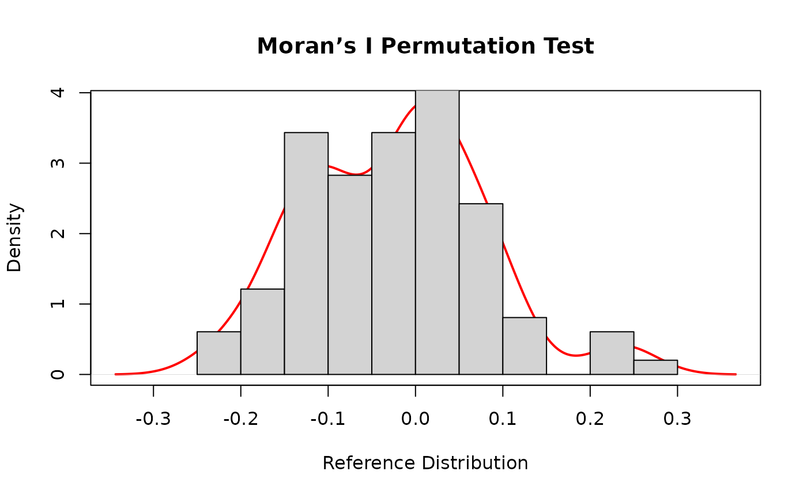
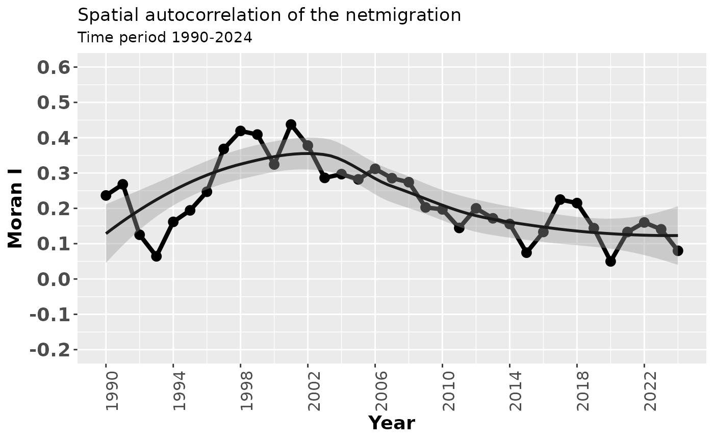
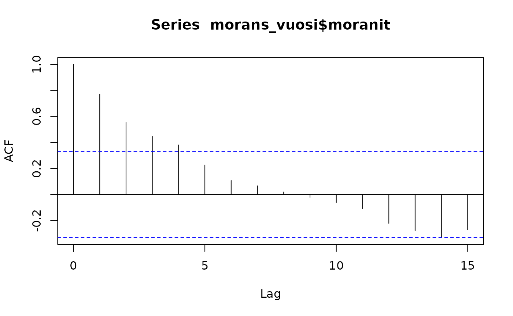
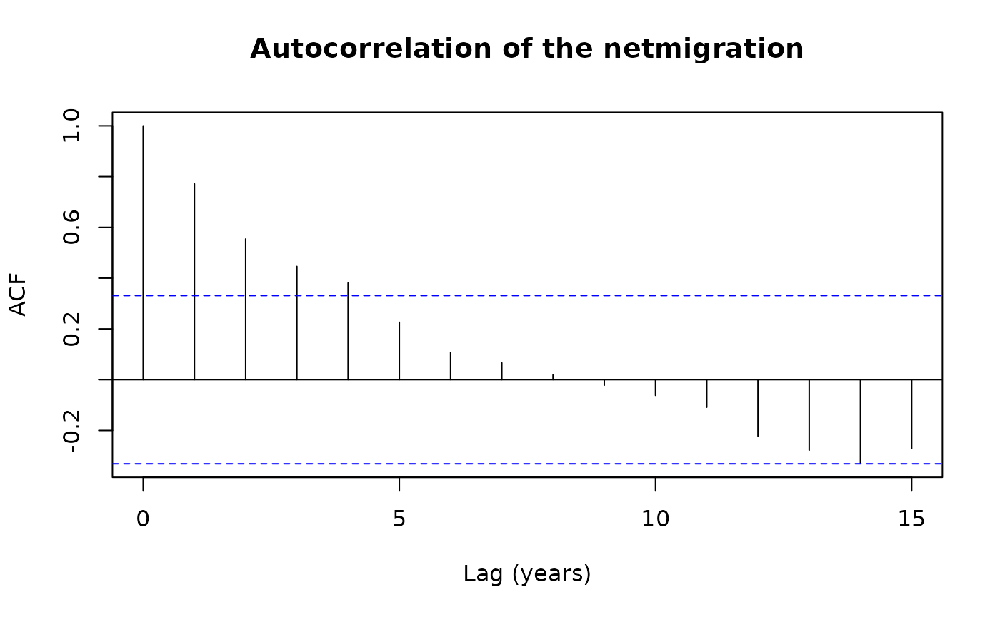
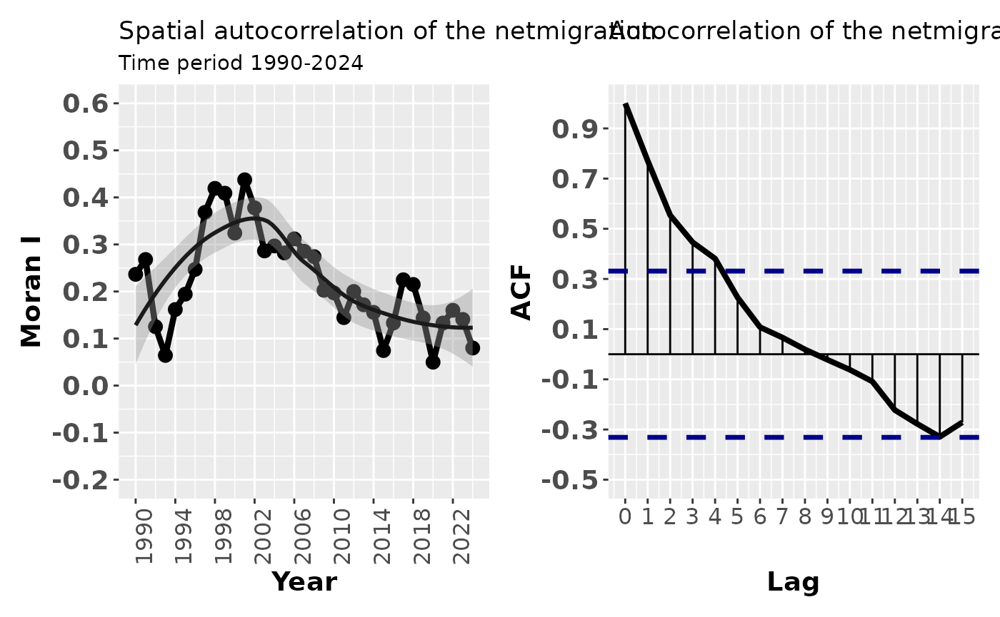
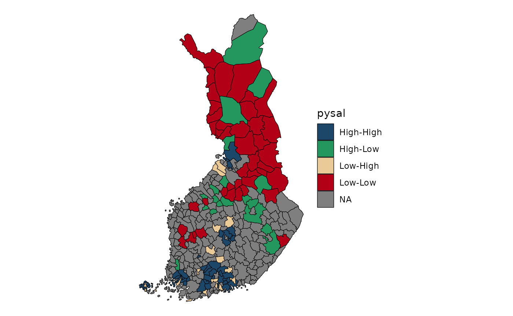

Lecture 7: Spatial autocorrelation
Source:vignettes/lecture07-spatial-autocorrelation.Rmd
lecture07-spatial-autocorrelation.RmdGeospatial analysis and spatial autocorrelation
Geospatial analysis comprises statistical and computational methods developed for data with an explicit spatial dimension. Its aim is to understand, explain, and model spatial patterns and processes by incorporating spatial structure directly into the analysis.
A key motivation for geospatial analysis is the presence of spatial autocorrelation, which violates the assumption of independent and identically distributed (iid) observations used in classical statistics. Spatial autocorrelation arises because nearby locations tend to exhibit similar characteristics—a principle formalized in Tobler’s First Law of Geography, which states that everything is related to everything else, but near things are more related than distant things. As a result, geographic data often display spatial clustering rather than randomness.
Spatial autocorrelation is particularly common in social and regional data, where demographic and socio‑economic variables (such as income, unemployment, or migration) tend to be positively spatially autocorrelated. Geospatial analysis provides tools to detect, model, and interpret these dependencies using spatial autocorrelation measures and spatially explicit modelling approaches.
Understanding spatial dependence is essential, as observed spatial autocorrelation may reflect underlying spatial processes—or alternatively, model misspecification. Consequently, geospatial modelling requires careful consideration of spatial structure, scale, and the definition of spatial relationships.
Global Spatial Autocorrelation
Geospatial data analysis is challenged by the presence of spatial dependence among nearby observations. This spatial dependence can be revealed with spatial autocorrelation. For instance, global spatial autocorrelation can be measured with Moran’s I, which is an indicator of spatial proximity used in geography. Moran’s I is a single global indicator of a large area which does not reveal the detailed clusters involved in the spatial autocorrelation. Moran I is used in the articles I and V.
Spatial autocorrelation is when the value at any one point in space is dependent on values at the surrounding points. That is, the arrangement of values is not just random. Positive spatial correlation means that similar values tend to be near each other. Negative spatial correlation means that different values tend to be near each other.
Moran’s I is calculated as:
where
-
is the value of the variable in area i,
-
is the mean of the variable, and
-
is an element of the spatial weight matrix defining the spatial
relationship between areas i and j.
Global spatial autocorrelation can be measured using Moran’s I, a commonly used indicator of spatial dependence in geography. The statistic typically ranges from −1 to 1, where values close to 0 indicate a random spatial pattern. Values close to −1 indicate strong negative spatial autocorrelation, while values close to 1 indicate strong positive spatial autocorrelation.
The expected value of Moran’s I under spatial randomness is:
where is the number of spatial units (e.g. municipalities). Values larger than the expected value indicate positive spatial autocorrelation, while values smaller than the expected value indicate negative spatial autocorrelation.
Example: Global Spatial Autocorrelation with Moran’s I
In this example, we demonstrate how to calculate and visualize global
spatial autocorrelation using Moran’s I with the
spdep package in R. We use the Columbus dataset,
which is included in the package.
1. Load required package and data
# Install spdep if needed
# install.packages("spdep")
library(spdep)
# Load example dataset
data(columbus)
# Inspect the data
columbus## AREA PERIMETER COLUMBUS. COLUMBUS.I POLYID NEIG HOVAL INC
## 1005 0.309441 2.440629 2 5 1 5 80.467 19.531
## 1001 0.259329 2.236939 3 1 2 1 44.567 21.232
## 1006 0.192468 2.187547 4 6 3 6 26.350 15.956
## 1002 0.083841 1.427635 5 2 4 2 33.200 4.477
## 1007 0.488888 2.997133 6 7 5 7 23.225 11.252
## 1008 0.283079 2.335634 7 8 6 8 28.750 16.029
## 1004 0.257084 2.554577 8 4 7 4 75.000 8.438
## 1003 0.204954 2.139524 9 3 8 3 37.125 11.337
## 1018 0.500755 3.169707 10 18 9 18 52.600 17.586
## 1010 0.246689 2.087235 11 10 10 10 96.400 13.598
## 1038 0.041012 0.919488 12 38 11 38 19.700 7.467
## 1037 0.035769 0.902125 13 37 12 37 19.900 10.048
## 1039 0.034377 0.936590 14 39 13 39 41.700 9.549
## 1040 0.060884 1.128424 15 40 14 40 42.900 9.963
## 1009 0.106653 1.437606 16 9 15 9 18.000 9.873
## 1036 0.093154 1.340061 17 36 16 36 18.800 7.625
## 1011 0.102087 1.382359 18 11 17 11 41.750 9.798
## 1042 0.055494 1.183352 19 42 18 42 60.000 13.185
## 1041 0.061342 1.249247 20 41 19 41 30.600 11.618
## 1017 0.444629 3.174601 21 17 20 17 81.267 31.070
## 1043 0.699258 5.077490 22 43 21 43 19.975 10.655
## 1019 0.192891 1.992717 23 19 22 19 30.450 11.709
## 1012 0.247120 2.147528 24 12 23 12 47.733 21.155
## 1035 0.192226 2.240392 25 35 24 35 53.200 14.236
## 1032 0.171680 1.666489 26 32 25 32 17.900 8.461
## 1020 0.107298 1.406823 27 20 26 20 20.300 8.085
## 1021 0.137802 1.780751 28 21 27 21 34.100 10.822
## 1031 0.174773 1.637148 29 31 28 31 22.850 7.856
## 1033 0.085972 1.312158 30 33 29 33 32.500 8.681
## 1034 0.104355 1.524931 31 34 30 34 22.500 13.906
## 1045 0.117409 1.716047 32 45 31 45 31.800 16.940
## 1013 0.185580 2.108951 33 13 32 13 40.300 18.942
## 1022 0.087472 1.507971 34 22 33 22 23.600 9.918
## 1044 0.226594 2.519132 35 44 34 44 28.450 14.948
## 1023 0.175453 1.974937 36 23 35 23 27.000 12.814
## 1046 0.178130 1.790058 37 46 36 46 36.300 18.739
## 1030 0.121154 1.402252 38 30 37 30 43.300 17.017
## 1024 0.053881 0.934509 39 24 38 24 22.700 11.107
## 1047 0.174823 2.335402 40 47 39 47 39.600 18.477
## 1016 0.302908 2.285487 41 16 40 16 61.950 29.833
## 1014 0.137024 1.525097 42 14 41 14 42.100 22.207
## 1049 0.266541 2.176543 43 49 42 49 44.333 25.873
## 1029 0.060241 0.967793 44 29 43 29 25.700 13.380
## 1025 0.173337 1.868044 45 25 44 25 33.500 16.961
## 1028 0.256431 2.193039 46 28 45 28 27.733 14.135
## 1048 0.124728 1.841029 47 48 46 48 76.100 18.324
## 1015 0.245249 2.079986 48 15 47 15 42.500 18.950
## 1027 0.069762 1.102032 49 27 48 27 26.800 11.813
## 1026 0.205964 2.199169 50 26 49 26 35.800 18.796
## CRIME OPEN PLUMB DISCBD X Y AREA NSA NSB EW CP
## 1005 15.725980 2.850747 0.217155 5.03 38.80 44.07 10.3910 1 1 1 0
## 1001 18.801754 5.296720 0.320581 4.27 35.62 42.38 8.6210 1 1 0 0
## 1006 30.626781 4.534649 0.374404 3.89 39.82 41.18 6.9810 1 1 1 0
## 1002 32.387760 0.394427 1.186944 3.70 36.50 40.52 2.9080 1 1 0 0
## 1007 50.731510 0.405664 0.624596 2.83 40.01 38.00 16.8270 1 1 1 0
## 1008 26.066658 0.563075 0.254130 3.78 43.75 39.28 8.9290 1 1 1 0
## 1004 0.178269 0.000000 2.402402 2.74 33.36 38.41 16.2200 1 1 0 0
## 1003 38.425858 3.483478 2.739726 2.89 36.71 38.71 6.4390 1 1 0 0
## 1018 30.515917 0.527488 0.890736 3.17 43.44 35.92 16.1640 1 1 1 0
## 1010 34.000835 1.548348 0.557724 4.33 47.61 36.42 7.2680 1 1 1 0
## 1038 62.275448 0.000000 1.479915 1.90 37.85 36.30 1.2850 1 1 0 1
## 1037 56.705669 3.157895 2.635046 1.91 37.13 36.12 1.4720 1 1 0 1
## 1039 46.716129 0.000000 6.328423 2.09 35.95 36.40 1.0930 1 1 0 1
## 1040 57.066132 0.477104 5.110962 1.83 35.72 35.60 2.0770 1 1 0 1
## 1009 48.585487 0.174325 1.311475 1.70 39.61 34.91 3.2310 1 1 1 1
## 1036 54.838711 0.533737 4.687500 1.10 37.60 34.08 3.5900 1 1 0 1
## 1011 36.868774 0.448232 1.619745 4.47 48.58 34.46 3.4570 1 1 1 0
## 1042 43.962486 24.998068 13.849287 1.58 36.15 33.92 2.6910 1 1 0 1
## 1041 54.521965 0.111111 2.622951 1.53 35.76 34.66 1.3690 1 1 0 1
## 1017 0.223797 5.318607 0.167224 3.57 46.73 31.91 14.4530 0 1 1 0
## 1043 40.074074 1.643756 1.559576 1.41 34.08 30.42 21.2820 0 0 0 1
## 1019 33.705048 4.539754 1.785714 2.45 43.37 33.46 6.8400 1 1 1 1
## 1012 20.048504 0.532632 0.216763 4.78 49.61 32.65 6.9010 0 0 1 0
## 1035 38.297871 0.626220 18.811075 0.42 36.60 32.09 6.0287 1 1 0 1
## 1032 61.299175 0.000000 6.529851 0.83 39.36 32.88 5.5540 1 1 1 1
## 1020 40.969742 1.238288 2.534275 1.50 41.13 33.14 3.7000 1 1 1 1
## 1021 52.794430 19.368099 1.483516 2.24 43.95 31.61 5.7000 0 0 1 1
## 1031 56.919785 0.509305 3.001072 1.41 41.31 30.90 5.1670 0 0 1 1
## 1033 60.750446 0.000000 2.645051 0.81 39.72 30.64 2.2180 0 0 1 1
## 1034 68.892044 1.638780 15.600624 0.37 38.29 30.35 3.1930 0 0 0 1
## 1045 17.677214 3.936443 0.853890 3.78 27.94 29.85 3.8120 1 1 0 0
## 1013 19.145592 2.221022 0.255102 4.76 50.11 29.91 8.6710 0 0 1 0
## 1022 41.968163 0.000000 1.023891 2.28 44.10 30.40 2.0290 0 0 1 1
## 1044 23.974028 3.029087 0.386803 3.06 30.32 28.26 7.6080 0 0 0 0
## 1023 39.175053 4.220401 0.633675 2.37 43.70 29.18 6.3800 0 0 1 1
## 1046 14.305556 6.773331 0.332349 4.23 27.27 28.21 5.1910 0 0 0 0
## 1030 42.445076 4.839273 1.230329 1.08 38.32 28.82 7.5730 0 0 1 1
## 1024 53.710938 0.000000 0.800000 1.58 41.04 28.78 1.5570 0 0 1 1
## 1047 19.100863 0.000000 0.314663 5.53 24.25 26.69 6.4020 0 0 0 0
## 1016 16.241299 6.451310 0.132743 4.40 48.44 27.93 8.7720 0 0 1 0
## 1014 18.905146 0.293317 0.247036 5.33 51.24 27.80 4.6320 0 0 1 0
## 1049 16.491890 1.792993 0.134439 3.87 29.02 26.58 8.6950 0 0 0 0
## 1029 36.663612 0.000000 0.589226 1.95 41.09 27.49 2.2740 0 0 1 1
## 1025 25.962263 1.463993 0.329761 2.67 43.23 27.31 6.3050 0 0 1 0
## 1028 29.028488 1.006118 2.391200 2.13 39.32 25.85 8.7850 0 0 1 1
## 1048 16.530533 9.683953 0.424628 5.27 25.47 25.71 3.8220 0 0 0 0
## 1015 27.822861 0.000000 0.268817 5.57 50.89 25.24 7.9890 0 0 1 0
## 1027 26.645266 4.884389 1.034807 2.33 41.21 25.90 2.6620 0 0 1 1
## 1026 22.541491 0.259826 0.901442 3.03 42.67 24.96 7.0050 0 0 1 0
## THOUS NEIGNO PERIM
## 1005 1000 1005 2.440629
## 1001 1000 1001 2.236939
## 1006 1000 1006 2.187547
## 1002 1000 1002 1.427635
## 1007 1000 1007 2.997133
## 1008 1000 1008 2.335634
## 1004 1000 1004 2.554577
## 1003 1000 1003 2.139524
## 1018 1000 1018 3.169707
## 1010 1000 1010 2.087235
## 1038 1000 1038 0.919488
## 1037 1000 1037 0.902125
## 1039 1000 1039 0.936590
## 1040 1000 1040 1.128423
## 1009 1000 1009 1.437606
## 1036 1000 1036 1.340060
## 1011 1000 1011 1.382359
## 1042 1000 1042 1.183352
## 1041 1000 1041 1.249247
## 1017 1000 1017 3.174601
## 1043 1000 1043 5.077491
## 1019 1000 1019 1.992717
## 1012 1000 1012 2.147528
## 1035 1000 1035 2.240392
## 1032 1000 1032 1.666489
## 1020 1000 1020 1.406823
## 1021 1000 1021 1.780751
## 1031 1000 1031 1.637148
## 1033 1000 1033 1.312158
## 1034 1000 1034 1.524931
## 1045 1000 1045 1.716046
## 1013 1000 1013 2.108951
## 1022 1000 1022 1.507971
## 1044 1000 1044 2.519132
## 1023 1000 1023 1.974937
## 1046 1000 1046 1.790058
## 1030 1000 1030 1.402253
## 1024 1000 1024 0.934508
## 1047 1000 1047 2.335402
## 1016 1000 1016 2.285486
## 1014 1000 1014 1.525097
## 1049 1000 1049 2.176543
## 1029 1000 1029 0.967793
## 1025 1000 1025 1.868044
## 1028 1000 1028 2.193039
## 1048 1000 1048 1.841029
## 1015 1000 1015 2.079986
## 1027 1000 1027 1.102032
## 1026 1000 1026 2.199169More information about the dataset can be found by typing:
?columbus## Help on topic 'columbus' was found in the following packages:
##
## Package Library
## spdep /home/runner/work/_temp/Library
## spData /home/runner/work/_temp/Library
##
##
## Using the first match ...2. Create a spatial weights matrix
To compute Moran’s I, we need a spatial weights matrix describing neighbourhood relationships.
The Columbus dataset already includes a contiguity-based neighbours object (col.gal.nb).
## [1] "listw" "nb"The weights are row-standardized, meaning that each row sums to one.
colqueen$weights[1:3]## [[1]]
## [1] 0.5 0.5
##
## [[2]]
## [1] 0.3333333 0.3333333 0.3333333
##
## [[3]]
## [1] 0.25 0.25 0.25 0.253. Moran’s I using normality approximation
We first compute Moran’s I using a normal approximation for the p-value.
?moran.test
moran.test(columbus$CRIME,colqueen,randomisation=FALSE, alternative="two.sided")##
## Moran I test under normality
##
## data: columbus$CRIME
## weights: colqueen
##
## Moran I statistic standard deviate = 5.3818, p-value = 7.374e-08
## alternative hypothesis: two.sided
## sample estimates:
## Moran I statistic Expectation Variance
## 0.485770914 -0.020833333 0.008860962We can also calculate Moran´s I for income:
moranINC <- moran.test(columbus$INC,colqueen,randomisation=FALSE,
alternative="two.sided")
print(moranINC)##
## Moran I test under normality
##
## data: columbus$INC
## weights: colqueen
##
## Moran I statistic standard deviate = 4.6495, p-value = 3.327e-06
## alternative hypothesis: two.sided
## sample estimates:
## Moran I statistic Expectation Variance
## 0.416837942 -0.020833333 0.0088609624. Moran’s I using permutation tests
Permutation tests avoid distributional assumptions and are often preferred.
morpermCRIME <- moran.mc(columbus$CRIME, colqueen, nsim = 99) # Moran's I with 99 permutations
morpermCRIME##
## Monte-Carlo simulation of Moran I
##
## data: columbus$CRIME
## weights: colqueen
## number of simulations + 1: 100
##
## statistic = 0.48577, observed rank = 100, p-value = 0.01
## alternative hypothesis: greaterThe permutation distribution can be extracted from the results:
morp <- morpermCRIME$res[-length(morpermCRIME$res)]5. Visualizing the permutation distribution
We visualize the permutation distribution using a density curve, histogram, and reference line for the observed Moran’s I.
# Kernel density estimate
zz <- density(morp)
# Plot density curve
plot(zz,
main = "Moran’s I Permutation Test",
xlab = "Reference Distribution",
lwd = 2,
col = "red")
# Add histogram
hist(morp, freq = FALSE, add = TRUE)
# Add observed Moran's I as a vertical line
abline(v = morpermCRIME$statistic,
lwd = 2,
col = "blue")
Interpretation (for teaching)
- Positive Moran’s I - spatial clustering of similar values
- Negative Moran’s I - spatial dispersion
- Permutation test assesses significance without distributional assumptions
- If the observed value lies in the tail of the permutation distribution, spatial autocorrelation is significant
Example: Moran I and function
In this exercise, you will calculate global spatial autocorrelation for municipal net migration using a simple function. The aim is to analyse how spatial autocorrelation has changed between 1990 and 2024. The dataset used in the exercise is sourced from the Sotkanet database.
1. Reading the attribute data from the package
We first read a CSV file stored inside the R package.
The file is located in the inst/extdata/ directory, which is the recommended place for external data files bundled with a package.
The function system.file() ensures that the correct file path is found regardless of where the package is installed.
csv_path <- system.file("extdata",
"netmigration.csv",
package = "spatialcourseOL")
df <- read.csv(csv_path)
df$tunnus<- as.numeric(df$tunnus)The municipality identifier (tunnus) is converted to numeric so that it matches the corresponding identifier used in the spatial data.
2. Downloading municipality boundaries
Next, we download up‑to‑date municipality boundaries for Finland using the geofi package.
This returns a spatial object (sf) that contains both geometry and attribute information for municipalities.
municipalities25 <- geofi::get_municipalities(year = 2025)## Requesting response from: https://geo.stat.fi/geoserver/wfs?service=WFS&version=1.0.0&request=getFeature&typename=tilastointialueet%3Akunta4500k_2025## Warning: Coercing CRS to epsg:3067 (ETRS89 / TM35FIN)## Data is licensed under: Attribution 4.0 International (CC BY 4.0)3. Merging attribute data with spatial data
We then join the migration data to the municipality boundaries.
A left join is used so that all municipalities are retained, even if some municipalities are missing migration values for certain years.
This is important for spatial analysis, as removing spatial units would alter neighbourhood relationships.
4. Preparing spatial coordinates
To construct spatial weight matrices, we first extract the spatial coordinates of municipalities.
These coordinates represent the centroids of each spatial unit.
# create weights object
#install.packages("sfdep")
library(sfdep)
#coords<-coordinates(municipalities2_monip)
coords<-st_coordinates(migra)5. Creating spatial weight matrices
We define spatial neighbourhood relationships using k‑nearest neighbours, where each municipality is connected to its six nearest neighbours.
This approach ensures that all municipalities have the same number of neighbours, avoiding isolated units.
The neighbour structure is converted into a spatial weights object required for spatial autocorrelation analysis.
# create spatial weigth matrices, 6 nearest neighbors
migra_kn6<-st_knn(sf::st_geometry(migra), k = 6)## ! Polygon provided. Using point on surface.
migra_kn6_w<- nb2listw(migra_kn6)6. Calculating Moran’s I for multiple years
We calculate global Moran’s I for net migration for each year in the period 1990–2024.
The migration values for different years are stored in columns 73–107 of the dataset.
A loop is used to compute Moran’s I separately for each year, and only the Moran’s I coefficient is stored.
pros=migra[,73:107]
pros<-as.data.frame(pros)
moranit=numeric()
for (i in 1:35){
m=moran.test(pros[[i]], listw=migra_kn6_w , alternative="two.sided")
kerroin=m$est[1]
moranit[[as.character(i)]]=kerroin
}
moranit## 1 2 3 4 5 6 7
## 0.23650350 0.26804452 0.12524840 0.06419888 0.16173170 0.19430971 0.24699405
## 8 9 10 11 12 13 14
## 0.36820975 0.41920222 0.40897351 0.32414279 0.43740533 0.37781769 0.28625821
## 15 16 17 18 19 20 21
## 0.29681771 0.28202448 0.31187575 0.28542425 0.27409294 0.20266999 0.19709253
## 22 23 24 25 26 27 28
## 0.14453258 0.20005530 0.17178094 0.15570028 0.07451206 0.13310935 0.22488704
## 29 30 31 32 33 34 35
## 0.21496010 0.14385549 0.04978913 0.13299150 0.16007641 0.14067518 0.079851097. Creating a results dataframe
The Moran’s I values are converted into a dataframe and combined with a corresponding year variable.
This structure is suitable for time‑series visualization.
# let's create a dataframe from results
morans_vuosi=as.data.frame(moranit)
aika<- seq(1990, 2024, 1) # a new variable from years
morans_vuosi$Vuosi<-aika # add year variable to dataframe8. Visualising the results
Finally, we visualise the development of spatial autocorrelation over time using ggplot2.
The plot shows how Moran’s I for net migration evolves across years, including a smoothed trend line to highlight overall change.
library(ggplot2)
fig1<-ggplot(data=morans_vuosi, aes(x=Vuosi, y=moranit)) + geom_line(linewidth=1.5) + geom_point(size=3)+
labs(title="Spatial autocorrelation of the netmigration",
x="Year", y="Moran I",
subtitle="Time period 1990-2024") +
theme(axis.text.x = element_text(angle = 90, hjust = 1))+
theme(legend.position="none") +
geom_smooth(colour="gray10") + scale_x_continuous(breaks=seq(1990, 2024, 4)) +
scale_y_continuous(breaks=seq(-0.2, 0.6, 0.1), limits=c(-0.20,0.6)) +
theme(axis.text.y = element_text(size=14, face = "bold"),
axis.text.x = element_text(size=12),
axis.title=element_text(size=14, face="bold"))See the figure:
fig1## `geom_smooth()` using method = 'loess' and formula = 'y ~ x'
Analysing temporal autocorrelation of Moran’s I
After computing Moran’s I values for each year, we next investigate whether these values themselves exhibit temporal autocorrelation. This helps us understand whether spatial autocorrelation in net migration is persistent from year to year.
Computing the autocorrelation function (ACF)
We first compute the autocorrelation function (ACF) for the time series of Moran’s I values using the acf() function.
The result is stored as an object that contains the autocorrelation coefficients at different time lags.
c<-acf(morans_vuosi$moranit)
To facilitate plotting with ggplot2, we extract the lag values and autocorrelation coefficients into a data frame.
cdf <- with(c, data.frame(lag, acf))Defining confidence limits
We calculate approximate confidence limits for the autocorrelation values under the assumption of white noise.
If an autocorrelation coefficient exceeds these limits, it can be considered statistically significant.
Visualising the ACF with ggplot2
Next, we visualise the autocorrelation structure using ggplot2.
The plot shows the ACF values as vertical segments, together with horizontal reference lines at zero and the confidence limits.
kuva1_acf<- ggplot(data = cdf, mapping = aes(x = lag, y = acf)) +
geom_line(lwd=1.4, color="black") +
geom_hline(aes(yintercept = 0)) +
geom_segment(mapping = aes(xend = lag, yend = 0)) +
labs(title = "Autocorrelation of the netmigration",
x="Lag", y="ACF") +
geom_hline(aes(yintercept = ciline), linetype = 2, color = 'darkblue', lwd=1.2) +
geom_hline(aes(yintercept = -ciline), linetype = 2, color = 'darkblue',lwd=1.2) +
scale_x_continuous(breaks=seq(0, 15, 1)) +
scale_y_continuous(breaks=seq(-0.5, 1, 0.2), limits=c(-0.5,1)) +
theme(axis.text.y = element_text(size=14, face = "bold"),
axis.text.x = element_text(size=12),
axis.title=element_text(size=14, face="bold"))Traditional base‑R ACF plot
For comparison, we also produce the standard base‑R autocorrelation plot. This plot provides the same information but is generated automatically without manual control over graphical elements.
k1<-plot(c, main="Autocorrelation of the netmigration",
xlab="Lag (years)", ylab="ACF")
Combining plots
Finally, we combine the previously created ggplot‑based figure with the base‑R plot layout using the patchwork package.
This allows us to display multiple visualisations side by side for comparison.
## `geom_smooth()` using method = 'loess' and formula = 'y ~ x'
Interpretation
- Significant ACF values at low lags indicate temporal persistence in spatial autocorrelation.
- If Moran’s I values are autocorrelated over time, spatial clustering patterns tend to evolve gradually rather than abruptly.
- This analysis complements spatial autocorrelation analysis by revealing temporal structure in spatial dependence.
Local Spatial Autocorrelation
Moran’s I is a single global indicator and therefore does not reveal the detailed spatial clusters underlying spatial autocorrelation. To investigate spatial autocorrelation at the level of individual spatial units, local spatial autocorrelation indices, such as LISA (Local Indicators of Spatial Association), can be used. These indices indicate statistically significant spatial clustering of similar values, dissimilar values, or random patterns around each observation, allowing us to identify where spatial autocorrelation exists in the dataset (Anselin, 1995).
Under the randomization hypothesis, the expected value of the local Moran’s I for location i is
where is the sum of the elements in row i of the spatial weight matrix , and is the number of spatial units.
A positive value of indicates spatial clustering of similar values between a region and its neighbours, whereas a negative value indicates spatial clustering of dissimilar values. An area is considered to exhibit spatial autocorrelation if the local indicators reveal statistically significant positive autocorrelation. For further details on LISA statistics, see Anselin (1995).
Sa
1Loading required packages
We first load the packages needed for spatial data handling, spatial statistics, data manipulation, and visualisation.
Steps 2-4 are identical for previous example.
2. Reading the attribute data from the package
We first read a CSV file stored inside the R package.
The file is located in the inst/extdata/ directory, which is the recommended place for external data files bundled with a package.
The function system.file() ensures that the correct file path is found regardless of where the package is installed.
csv_path <- system.file("extdata",
"netmigration.csv",
package = "spatialcourseOL")
df <- read.csv(csv_path)
df$tunnus<- as.numeric(df$tunnus)The municipality identifier (tunnus) is converted to numeric so that it matches the corresponding identifier used in the spatial data.
3. Downloading municipality boundaries
Next, we download up‑to‑date municipality boundaries for Finland using the geofi package.
This returns a spatial object (sf) that contains both geometry and attribute information for municipalities.
municipalities25 <- geofi::get_municipalities(year = 2025)## Requesting response from: https://geo.stat.fi/geoserver/wfs?service=WFS&version=1.0.0&request=getFeature&typename=tilastointialueet%3Akunta4500k_2025## Warning: Coercing CRS to epsg:3067 (ETRS89 / TM35FIN)## Data is licensed under: Attribution 4.0 International (CC BY 4.0)4. Merging attribute data with spatial data
We then join the migration data to the municipality boundaries.
A left join is used so that all municipalities are retained, even if some municipalities are missing migration values for certain years.
This is important for spatial analysis, as removing spatial units would alter neighbourhood relationships.
5. Defining spatial neighbourhoods
To capture spatial relationships, we define neighbourhood structures based on spatial contiguity and k‑nearest neighbours.
Next, we define a k‑nearest‑neighbour structure with six neighbours per unit. This approach ensures that all spatial units receive an equal number of neighbours.
# Create k-nearest neighbours (k = 6)
migra_kn6 <- st_knn(st_geometry(migra), k = 6)## ! Polygon provided. Using point on surface.
# Create spatial weights
wt <- st_weights(migra_kn6)6. Calculating Local Moran’s I (LISA)
We calculate Local Moran’s I for net migration in the year 1990 (nm1990).
The calculation is applied directly within a mutate() call, which stores the results as a list column.
lisa <- migra %>%
mutate(moran = local_moran(nm1990, migra_kn6, wt))7. Visualising LISA clusters
To visualise the spatial clustering, we extract (unnest) the LISA results and display only statistically meaningful clusters.
Areas are classified based on the cluster type (high‑high, low‑low, high‑low, low‑high), and only results with meaningful significance levels are shown.
lisa %>%
tidyr::unnest(moran) %>%
mutate(pysal = ifelse(p_folded_sim <= 0.1,
as.character(pysal),
NA)) |>
ggplot(aes(fill = pysal)) +
geom_sf() +
geom_sf(lwd = 0.2, color = "black") +
theme_void() +
scale_fill_manual(values = c(
"#1C4769", # High–High
"#24975E", # Low–Low
"#EACA97", # Low–High
"#B20016" # High–Low
))
Interpretation
- High–High (HH) clusters indicate areas with high net migration surrounded by similarly high values.
- Low–Low (LL) clusters indicate areas of low net migration surrounded by low values.
- High–Low (HL) and Low–High (LH) clusters signal spatial outliers.
- Statistically significant LISA results reveal localised spatial processes that are not visible in global Moran’s I.
Summary
This workflow demonstrates how to:
- build spatial neighbourhoods,
- compute Local Moran’s I,
- and visualise spatial clusters of net migration.
LISA analysis provides crucial insight into where spatial dependence occurs, complementing global spatial autocorrelation measures.